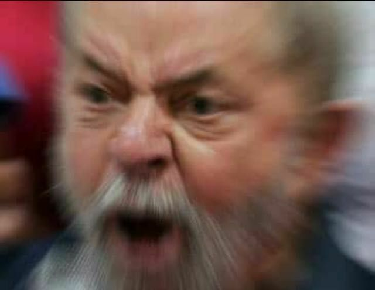
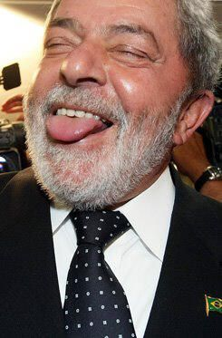

Notícias
PF apreende US$ 35 mil em dinheiro vivo na casa de Mauro Cid, ex-ajudante de ordens de Bolsonaro
A Polícia Federal apreendeu dinheiro vivo na casa do tenente-coronel Mauro Cid, ex-ajudante de ordens do ex-presidente Jair Bolsonaro. Cid foi preso nesta quarta-feira (3), na operação que apura suspeita de fraude na carteira de vacinação de Bolsonaro, da filha e de assessores.
Lula confirma general Amaro para comando do GSI
O presidente Lula definiu, em reunião nesta quarta-feira (3), o nome do general Marcos Antônio Amaro dos Santos para assumir o comando do Gabinete de Segurança Institucional (GSI).
Burocracia e fantasma do orçamento secreto travam emendas no governo Lula e ameaçam votações no Congresso
Após se reunir com o presidente da Câmara, Arthur Lira, a sós na manhã de terça-feira (2), o presidente Luiz Inácio Lula da Silva (PT) deu uma ordem expressa aos ministros palacianos para que eles encontrem uma solução rápida para liberar o dinheiro das emendas parlamentares.
